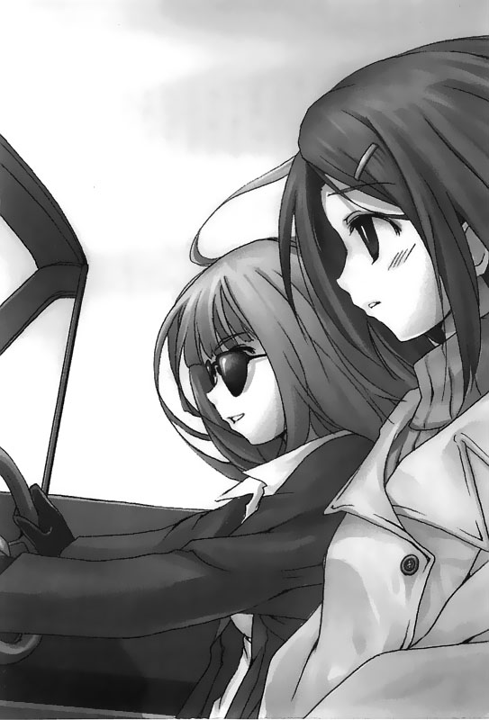
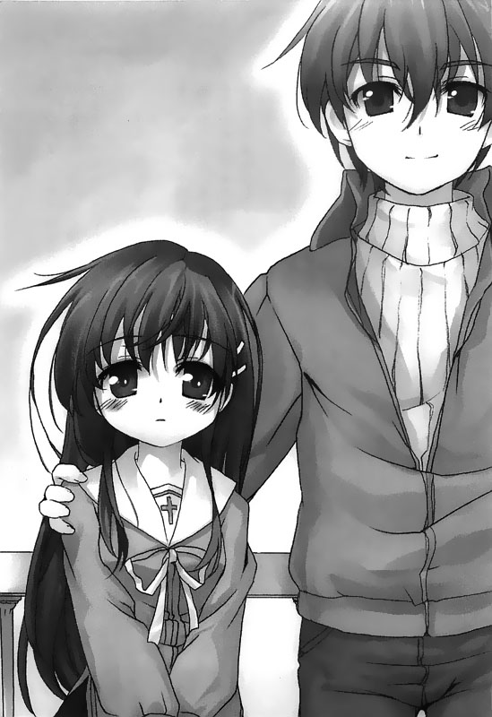

回到顶部

前往底部

10.スカーレット


这天正午过后，我依旧来到佐仓家，就在我站在玄关门前——
嘟嘟嘟嘟嘟嘟——地电话铃声忽然从门内窜了出来。我赶紧取出了佐仓太太交给我的备份钥匙，开了门便赶紧冲向电话机旁。
「喂、喂？这里是佐仓家，请问您哪里找！」
「………………」
「喂——喂？喂？」
听到对方没有回话，我的心情越揪越紧。
这通电话的来电显示是公共电话。虽说并不是从阿东优手机打来的，不过若是濑津美，她同样也有可能会用公共电话打回家里来。
「喂，是濑津美吗？濑津美，拜托你说话好吗？」
「………………」
说完前一句话后，我试着保持短暂的沉默，屏息等待着对反的回复。
接着，双方一阵沉默之后对方终于开口了——
「……你……你是谁？」
这句话像是雨滴落入水洼一般，细微的声音稍纵即逝。
「我、我是医院里的柜台小姐，我叫莳绘。为了方便联络和处理一些事情，我现在白天都会待在你们家里等待你跟我们联系。」
我一口气把话给说完，声音在莫名的激动中显得有些颤抖。
「……是……是不是妈妈出了什么事？」
「不，不是。你妈妈没有问题，别担心……」
又听到她的声音之后，我稍微冷静下来了。我深深地吸了一口气，然后将几天下来发生的事情全告知给濑津美——从我在偶然间接到这起协助寻找自用车的请托，然后到我现在自愿来到佐仓太太家里，帮忙守候各方面联络的经历；这其中也包含了阿东先生发怒的事，还有我们已经向警方请求代为搜寻并确保濑津美和阿东优两人人身安全的事。
「……我可以请你告诉我一件事吗……」
濑津美听我说完了整件事情之后对着我开口问了一句：
「我妈妈她……说了什么？」
「这个……」
面对这个问题，我一时半刻之间烦恼着不知道到底该怎么回答——面对佐仓太太和她的先生，不论我怎么问他们关于这件事的感想，最后得到的都只有一个答案——他们希望女儿最后可以好好任性一次——然而，我却不知道我该不该把这句话转告给濑津美本人知道……
——哗——
「啊！等等——」
我听到公共电话吃掉最后余额即将挂断的声音，慌张叫了出来。然而，终究还是没有赶上——啪嚓——嘟……嘟……嘟……嘟……电话中响着通讯中断的提示音，我茫然地站在那里不知所措发呆了好一会儿……
「至少……双方面的沟通上算是有一点点进步了吧……」
我忍不住这么安慰自己。
现在我至少可以确认濑津美平安无事，大概阿东优也一样平安。于是我赶紧拨电话给NNT④
④译注：NNT，日本电信电话公司，日本国内最大的民营通讯业者。
之前我在接到了濑津美拨来的第一通电话时也曾询问过阿东优申请的手机电信服务业者，不过他们似乎不太能给出门号持有人确切的发话地点，以我们现在自力调查的情况来说，他们甚至不能提供这方面的协助。
然而，这次濑津美用的是公共电话。如果我把详细情形告知NNT公司里头具有一定阶级的主管，他们应该可以帮我们查询这通公共电话的发话地址才对。
「这样啊……濑津美打电话回来了呀……」
「对，我请了电信公司帮忙查询他们现在拨电话的位置，确切地点是在滋贺县大津——名神高速公路的大津收费站。」
我将中午发生的事告诉了兼差下班回来的佐仓太太。
「那你打算怎么办呢，莳绘小姐？」她问。
「我想去一趟看看。」
感觉这件事跟我没有关系，不过既然已经涉入到这一步，要我站在一旁袖手旁观，我实在没那种耐性——而且我的年假还有剩着。
虽说这么去不见得可以见到他们俩，不过若是他们遇上了什么困难，也许我有机会能够提供一些程度的协助……这是我答话时脑子里怀有的想法。
「对于你的决定……我并不反对，不过莳绘小姐……」
「嗯？是。」
「这次的离开医院，是她第一次凭着自己的意志决定的事……我希望你能够让她选择自己想做的事，不管遇上什么问题都不要拦她。」
「……我知道了。」
我点点头，然后转身离开了佐仓太太的家。我手上现在并非握有任何其他的线索，不过还是决定先行动身。
我回到了自己的房间，先试着联络一位朋友。
其实是因为虽然我打算往滋贺县去，不过我并非是有车阶级。而且虽有驾照，但几乎没有实际在公路上开过车，真要自己开我还不太敢开。再说，濑津美打电话回来的地方是在名神高速公路的滋贺休息站。现在他们可能还要往更远的地方走，因此我打算找我那位日子过得很悠闲，应该可以空出时间帮忙的朋友帮我开车，由我来付油钱和过路费。
「喂，我是莳绘。好久不见，那个……我有事情想找你商量……」
……
………………
「不行吗……」
我叹了一口气。
会有这样的结果我早也已经猜到了，不过这下子同事那边就全部碰壁了。我想，这次因为还关系到两位病人失踪的事件，让她们更不想淌这趟浑水了吧……
我接着试问我的大学同学。她们刚刚开始都当做一次小小的旅行，因此都还听得蛮开心的，不过一旦话题切进了重点——
「抱歉，这件事听起来有点复杂，我想我还是算了……」
我听到一句又一句这样的推辞，结果又让我吃了好几次闭门羹。
……唉，说起来会有这样的反应我也不是不能理解啦。毕竟我自己也是偶然被卷入了这起事件的。如果立场对调过来，是我受到这样的请托，我想我大概也会回绝掉吧。
「呜……怎么办好呢……我又没有可以帮忙的男性朋友……」
其实女性朋友的有车阶级本来就少，而我自己也只有驾照，却没有实际上路的经验，实在也不能怪其他朋友都没有车。短短的一个小时之间，我的计划就这么狠狠地被浇了一盆冷水。
就在我打算使出最后的手段，想打电话给租车公司的时候……
——嘟嘟嘟嘟嘟嘟……一个不熟悉的号码随同电话铃声浮现在我的手机荧幕之中。
「您好，我是莳绘。」
「午安，我听说你要去滋贺县是吗？」
「是……请问你是哪位？」
「我吗？我是昭岛——我该算是你大学时代的学姐吧」
她说话时的声音甜美，语气却显得非常活泼。但坦白说，我不记得有这个人。
「你刚刚打了很多电话在问有没有人能帮忙吧？」
「是……你该不会是从那边听到这个消息的吧？」
「对呀，我可以帮忙哦，我现在就去接你好吗？」
「啊、好，那就拜托你了……」
我接着告诉她我的地址，然后以最迅速的动作开始整理行李。
昭岛……也许是方才我打过电话的朋友告诉她这件事的。这是偶然也好，不是也罢，总之在我正打算放弃这个方法时，接到这通电话真的是为我带来了不小的帮助。
——叽咿咿咿！
一个颇为引人注意的刹车声中，一辆红色的敞篷车在我的面前停了下来。
「抱歉，让你久等了！」
推开车门走下来的是一名穿着套装、身形显得略为娇小的女性。
「忽然给你添了麻烦，真是不好意思……」我说。
「别介意，整件事情我大致上已经听说过了。」
她边答话边打开敞篷车的车顶，同时坐进了驾驶座中。
「快，上来吧——那个……是莳绘小姐对吧？」
「啊、是，叫我莳绘就可以了。」
「我叫作昭岛优花，叫我优花就可以了。」
坐上了副驾驶座后，我在她的提醒之下系上安全带，她便扳了一下钥匙发动引擎。她没打排档，而是先踩了几下油门，黑色的皮革手套在方向盘上摩擦，不时发出了——唧唧唧……的声音。
（……这女生，好帅气呀……这种俐落直爽的模样真的很适合她，想必她是个自然率真的人吧……）
「莳绘，那我们走啰！」
「啊、好。」
她一边说着，一边取出了太阳眼镜戴上，油门一踩便将车子疾驶了出去。
——一月二十九日东明高速公路海老名市——
黄昏的天空下，红色的Roadster疾驰在高速公路上。
优花的驾驶技术非常熟练，我们一路上车速始终维持在高档。
「这辆车跑的好快呀……」
「OK啦，虽说是辆旧车，不过我做了不少改装嘛。」
我在路上偶尔会像这样出声和坐在驾驶座上的优花攀谈——我在想，她也许是不太说话的，而我则是受她帮忙、坐在她车上的人，因此会担心不要让气氛弄得太尴尬。
看看她的外貌，似乎年纪大概跟我差不多，不过我总觉得她的实际年龄可能比我大上好几岁。再说，这次的事件似乎也是她从我的学姊的学姊那边听到的。种种层面都让我在心里面提醒自己，绝对不能对她失礼。
扣掉这些部分不说，她愿意帮我的忙、淌进这么麻烦的一淌浑水里，心理上更免不了对她怀有一份愧疚感……
「啊，对了——优花小姐，我得先把过路费跟油钱给你！」
我边说边从钱包里面掏出了一万元大钞交给她。
「没关系啦，这不用你出。」
「咦？可是这一趟来回可是得花上不少钱呀！再说，我们现在目的地暂定在大津休息站没错，不过搞不好还得跑得更远呢，这些钱怎么能全让你出呢？」
「我就说没关系了啦。其实这次的事情一方面也是因为我自己有兴趣才帮忙的。」
她答话的同时也打过了方向盘，将车驶进了中线。
「那个……优花小姐，你说你对这件事情感兴趣是……」
「喔。我听说你碰到的问题是有两个医院临终疗养病房的病患私自溜出去，开车去了滋贺县没错吧？」
「嗯，是……」
对于她的回答，我还是没能理解——事实上，我根本不觉得她有回答我的问题。毕竟这件事任谁碰到都会敬而远之吧？再说，她还不愿意收我提供的交通费，这就更令人难以理解了。
（……而且，现在的我根本就是连她为什么要陪我一起走这趟行程都不知道……）
「嗯，这样吧，我就简单跟你说——」
她仿佛读出了我的想法，先一步开口为了我心里的疑虑作出了解释：
「莳绘，你在那间医院工作的话，应该也听过这个传闻才对。」
「……传闻？是指哪件事呢？」
「就是之前七楼病房的病患擅自开车溜出医院然后被院方狠狠削了一顿的事呀。」
「啊、喔……是，我有听说过。」
这件事是我从一位在医院内担任病人看护工作的教会人士口中听到的。事件本身是没有酿成什么大问题，不过当时溜出医院的是一位处在重病末期的女性病患，她在没有得到院方许可的情况下，让朋友开车载她出游。
「你知道他们开的车最后怎么样了吗？」
「这我就真的不知道了……」
「那辆车，在当时溜出医院的那名病患过世之后，就送给了载她出游的那位挚友……当做是那位挚友全年无休地每天都去看她的奖品。」
她说完后轻轻地笑了。
「……是……这辆车吗？」
「嗯，大概吧。」
照她的说法，那她……她本身就是事件中那个每天都来探望自己罹患重病挚友的那个人了——同时也是未经院方许可而载着重病之人出游的驾驶……我不知道让她们想溜出医院的原因是什么，但如果真是如此，那么她会对濑津美和阿东优这两个和她们做出同样行为的人感兴趣，就不是什么很奇怪的事了。事实上，我自己在医院里头任职，大概也能够理解。若是毫不间断地，每天都要到医院陪伴自己的家人或亲友，而且对象还是临终疗养病房的病患，那真的会是一件非常累人的事。而她载着自己罹患重病的挚友溜出医院，先不论这件事对或不对，不过我想她和她朋友之间的感情应该是非常深刻吧。
「所以说呀，莳绘，你不用对我觉得亏欠，因为这是我基于自己的兴趣而想要参与的——不过话说回来，若你真的见到了那两个溜出临终疗养病房的病患，你打算怎么办呢？」
「嗯……这个嘛，我打算看看他们有没有遇上什么麻烦，想办法给予他们需要的协助。」
「哦……我倒是觉得这对他们来说也许有点像是多管闲事吧。」
「……多管闲事？是吗？」
「我不是他们，所以我不知道。不过……我也曾经有过类似的经验，因此若是从当时的我的想法来看，确实会有这样的感觉吧。」
红色的Roadster在黄昏的天空下与背景的红霞融成了一体。
我们开在东明高速公路上，不久就可以看到足柄休息区，但我们仍旧马不停蹄地继续朝着西方前进。
——一月二十九日名神高速公路京都桂川——
原本晴朗的天空此时渐渐布满厚重的云霭。在这样的天气变化之中，我们的银色轿跑车依旧不断地奔驰在高速公路上，走走停停，一旦累了便稍作休憩。现在我们已经就要开到桂川休息区了。
「我说，我们在这边稍微停一下吧？」
「嗯、嗯、嗯……」
她的表情看起来有些难受。
「……怎么了吗？」我问。
「有点累……」
也难怪。毕竟我们刚才一问一答地，在车子上嬉闹了好一阵子，想必是很耗精神的。加上我们又不是普通病人，体力上的消耗一定会比一般情况来得剧烈。
「那我去买个东西回来。」
「……嗯。」
说完，我赶忙跑了一趟休息站的商店，买回来的东西大概就跟我们去便利店买的差不多——
「来，一瓶宝矿力、饭团，还有一包洋芋片。」
「啊、嗯……」
她回了话，不过接过的东西却一点也没打算开始吃——这是怎么回事？明明她一向拿到东西就会先开始拆洋芋片的包装的……
「你……你该不会觉得身体很不舒服吧？」
「……没有啦……只是我的药吃完了……」
「这样啊……」
……药吃完了。这下不妙了……说起来，会遇上这样的状况，早在我们溜出医院之前就可以想见，而我当然也不是故意忽略掉这个必然会遇上的问题。然而，在此之前，我从没有去思考过这件事——事实上，我根本没打算去想，也没这种精神上的余裕去想……
「你的药是什么时候吃完的？」
「……昨天晚上。」
「那你已经一整天没有吃药了呢……」
医生告诉我，我的药绝对不可以超过两天没吃。我看她的情况大概也差不多。
想想，打从我们离开医院已经过了八天。以我们带出来的药量来看，这个问题迟早要碰到的。
（我……现在到底该怎么办才好……）
「喂……人家不要回医院去哦……」
「我知道，你也不会想回家吧。」
「嗯……」
银色的轿跑车离开了休息站，又重新上路。
我在距离最近的一个交流道驶离了高速公路。
虽说即使下了高速公路，我也没办法改变我们现在面临的窘况。但就算继续呆在休息区里，或者持续走在高速公路上同样也什么都不能做。于是我选择离开四周景致单调而且荒凉的高速公路，下了交流道朝市区开去。
我想寻找可能为我们带来一些帮助的地方。
首先，我得先找到一间医院。但这间医院不能是一般的小诊所，而是一间大医院；医院附近会有药局，我要找的就是那种开在大医院旁边的药局。
事实上，对于我们现在来说，最妥适的办法其实就是直接进大医院里头找医生处理；如果我们身上罹患的只是普通疾病，那我大概也会毫不犹豫的这样做。但……我们是临终疗养病房的病人。
我和濑津美两人手腕上都卷着一圈代表我们身份的白色手环，同时也显示着我们未经许可溜出医院的事实——我心里怀着这样的牵挂，开着车在市区内徘徊，同时两只眼睛也不停地四处张望着……我想，大医院附近的药局应该大部分的药品都有才对。
「有了！」
在一条大马路的转角处有一间看似大学附设的大医院。而在医院旁就有一块药局的招牌。我看附近路肩应该是没办法停车，于是找了一块空地，马上就把车子插了进去。
「喂，你把药袋给我。」我说。
「嗯，嗯……」
她带着一脸不解的表情将药袋递了过来。我接过表示着医院名称和病房的药袋，摊开只取了其中写了药品名称的单子——只带这个去应该可以了吧……
「那你在这边等我，我去去就回来。」
我将她留在车上，用接近跑步的速度朝着距离这边有一小段路的药局奔去。
——唰——
我站在门前等待着反应迟钝的自动门打开，进门后便直接朝着柜台走去。
「欢迎光临。」
一名中年大叔看到我便客气地向我打了招呼。他穿着白衣，怎么看都像是这里的药剂师。
「抱歉，请问你们有这种药吗？」
「嗯？喔，请稍等一下……」
他接过了我递出去的药袋便往储藏室里头走了进去。我想，他们除了提供普通的成药之外，也有代替医院开药给病人的业务才对。
记得之前我去大医院门诊的时候就是在旁边的大药局领药的。而这间药局就是开在大医院隔壁，也有相当的规模，我想大部分的药品它应该都有。
「抱歉，让您久等了，这是您要买的药。」
一会儿之后，又见那位大叔回到了柜台前。他手中拿了一袋透明塑料袋，里头装着两捆封入了数十颗胶囊的塑料片——有这些应该够了……那两捆胶囊随便数数大概也够濑津美撑两个礼拜才对。就在我正打算从口袋里掏出钱包的时候——
「啊，可以先让我看看你的处方签吗？」
「……处方签？」
「对，就是医生开的处方。因为这个是临床用药，必须要有医生核可才能卖。」
「…………」
「医生应该有开给你吧？」
……这个状况我没有事先料想到——其实仔细想想，既然我要买的不是成药，那么药局应该不可以随便卖给一般民众才对……
「……怎么了吗？」
「啊、那个……」
我支吾着不知道该怎么回话。而这位身穿白衣的大叔看到了我的反应脸上开始露出了狐疑的表情。
「啊、嗯？你那个是……」
忽然间，我从他的视线中察觉，他看到我手上的白色手环了——他边看边念，我的名字、血型，还有医院的名称……
唰——
「啊！」
我伸手欲抓药师拿出来放在玻璃柜上的两捆的塑胶片，却在混乱之中只抓到了几片。但我也没时间回头了，转身拔腿就跑。
「啊！站住——」
站在柜台里的大叔扬起了一阵尖叫。这声惊叫传入我的耳中时，我已经跑到了距离店门口约五公尺处。
我跑步的姿势狼狈，虽然步伐摇晃却仍拼尽全力地逃离现场。然而，就在我跑到反应迟缓的自动门前，就要冲出门外的时候……
——砰！锵啷——
「呜！好痛……」
我的头重重地撞了一下，让我的意识短暂呈现一片空白。
这一撞撞在自动门门边，力道大得连玻璃都撞破了。我摇摇头试着让自己清醒，用手推开开了一半的自动门，钻出店门口后边死命地向前奔跑，手中仍紧握着方才抢到的塑胶包。
「呼啊呼啊——呜……」
我的呼吸变得急促，头也不知不觉地扬了起来，药局和停车处之间短短数十公尺的距离此时竟让我觉得如此遥远……
虽然我隐约觉得身后并没有人从后头追过来，不过我根本没那个精神回过头去确认。
——要是我被抓走了，那她一个人被留下来该怎么办才好？
——要是我没有回去，她会不会就这么留在车子里面一直等我？
……我的脑中一直浮现出这些杂乱的思绪，双脚仍一刻也不敢松懈地持续狂奔着。我的脚步踉跄，呼吸紊乱，一想到这么点速度已经是我现在所有的能耐，便觉得可悲……
——啪当！
「呼啊呼啊……呼……」
我倒头栽进了驾驶座内，一阵慌忙之中赶紧发动了车子。此时的我，就连自己也发现体力比起日前从小钢珠店逃出来时，衰退了很多。
我看了看后视镜，发现自己的额头果真在撞破自动门时被玻璃划破而流出了一点血——这点伤应该很快就会自己愈合了吧……我边想边将车子开了出去，同时另一只手拿出了手帕轻轻地按住了自己额头上的伤。
「……你没事吧？」一旁的濑津美问。
「没事，你不用担心。这没什么。」
我挥挥手，要她安心地收起那一脸不安的表情，同时也将左手紧握着的，封入了胶囊的塑胶片交给她。
「快，快吃吧。」
「啊、嗯……」
那一张塑胶片只封入了几颗胶囊在里面，不过大概也够撑个两三天才对。
我今天还能成功抢到药，不过随着日子一天天过去，我的体力也明显地下滑。要是这些药再吃完了，那届时我们又到底该怎么办才好呢……
我们这趟旅行原本是没有任何目的地的，甚至没有地方可去。当初我们心里没有任何渴望，自然也没有失去任何东西的恐惧感。然而，现在不一样了……
我们找到了这趟旅程的目的地。在期待之中，也多了一分一旦无法如愿时的担忧。
——一月三十日京都郊外——
早晨，我们将车子停在某个公园旁熬过了夜晚。
「怎么样，身体还好吗？」我对着濑津美问。
「……嗯，还好。」
看她答话时的脸，似乎因为昨天拿了药开始吃的关系，气色明显好了许多。
我听她说，她的药量大约是一天三次，一次两颗。算算昨天抢到的那片塑胶片里封入的胶囊数，大概也只够她吃上两天。
（……我们接下来该怎么做好呢……）
若是再开回高速公路上往淡路岛去，以我们现在手边这点药，我担心撑不到那里。然而，若是没有医生的处方签，我们即使到了药局也买不到药；就算拿昨晚取的那一片胶囊的方法炮制，以我的体力来看恐怕成功的机会也不大。
而且，比起我，她似乎更不愿意回到医院里去……
（……我到底该怎么办……）
我在走投无路的焦虑感中不自觉地打开了手机。手机开机之后在液晶荧幕中显示出了一封手机邮件，来自一个我不认识的信箱。
……莳绘？这是发信人的名字吗……人在桂川，正往大津移动？
「这是怎么回事？」
我看了看发信时间，大约是今天凌晨四点——算算，差不多是三小时前传来的。
……这是说，有谁正朝着我们这边过来吗——瞬间，我看着邮件中的那一串文字：「我正往大津——你们所在的位置移动！」心里似乎有了底——之前濑津美在大津休息站的公共电话打电话回家……
「我问你哦，莳绘这个名字你认识吗？」我问。
「……嗯，那是我打电话回家的时候接电话的人，是医院里的人。」
「这样啊……那就没错了……」
我告诉她我手机上显示的邮件讯息，还有我的推论，然后提着手机推开车门。
我下了车之后便随即对着这通素未谋面的邮件发信人拨了电话——嘟嘟嘟嘟嘟嘟嘟……
「……请问……是莳绘小姐吗？」
「啊、是！是阿东吗？我正在等你打电话给我呢！」
从手机里头传来的声音听来，对方似乎是一名年轻女性。我将手机贴在耳边，尽可能保持平静地对着手机那头开口说话。
「莳绘小姐，我想先请你回答我几个问题。第一，你现在人在哪里？第二，你找我们想干什么？」
「不行，你得先回答我的问题，你们两个人现在都平安无事吗？」
她略过我的问题让我觉得不太高兴，不过我想对方会想知道我们的现况也是理所当然的事。因此我还是直截了当地回了话。
「现在没事，不过我们身上的药快吃完了。」
「这样啊……我知道了。那我告诉你，我现在人在大津休息站。我的目的是希望看看你们有没有遇上什么困难，让我可以帮助你们的。」
这名自称莳绘的女性在坚定的语气中针对我提出的问题作出了回应——她起初接到电话时的反应显得有些焦急，因此也挑起了我的不安。然而，现在我听到她说话的内容还有说话时的态度后，我想也许我可以相信她也说不定……
我在心里做出了决定，透过手机将我们现在的状况告诉了她，然后跟她约定了见面的地点——现在我们最迫切的问题就是濑津美的药不够了。这点以我的能耐完全是束手无策。然后，对方既然在医院工作，也许她真的有办法帮我们一点忙也说不定。
（……我现在都还没办法弄清楚这个叫莳绘的小姐究竟是什么人呢……）
如果她真是担心我们，除了濑津美拨的电话之外没有任何线索就来到大津，我想也许要好好谢谢她。
——一月三十日名神高速公路桂川休息站——
「莳绘，那两个溜出医院的病患已经到了吗？」
「嗯，约好的时间快到了，我想他们应该也快到了才对。」
面对优花的提问，我做出了回应。
「我说你呀，你还真是个爱管闲事的家伙呢——话说回来，能实际跟他们俩碰个面也是好事就是了。」她说。
这里是桂川休息站。优花一口气喝干了手中的咖啡，和我一同站在车前等着阿东和濑津美两人的到来。
「啊，来了！是那辆车！」
前方的圆环中排满了自动贩卖机。一辆车从圆环那头开了过来。我对着它猛挥着手。
——唧。银色的轿跑车在我们的眼前停了下来。这辆车确实是阿东优的父亲日前给我看过照片的车子，不会错了。
「唉呀，是INTEGRA呀？车主的品味不错呢。」优花看了阿东先生的车子说道。
「优花小姐，我们走吧。」
一名年轻男子看到我们靠近之后从驾驶座中推开了车门。
「你就是阿东优吧？」我对着他开口问道。
「你是莳绘小姐吗？」他也开口试着确认了一下。
「我是，你好。」
答完话之后，我对着他轻轻地点了点头。
「那个……这位是？」
「你不用理我，我只是陪她来的。」
面对对方的质疑，优花随便一句话便敷衍了过去——这倒让我觉得意外，她不是说过她对这两名病患感兴趣才来的吗……
「话说，阿东，怎么你只有一个人呀？」我问。
「喔，你说她呀？她刚刚吃了药，坐在车子上睡着了。」
这边离他们的车子有一段距离，不过从远处看去，副驾驶座里头确实有一个女孩正靠在椅背上休息。
「话说，莳绘小姐，我想我在电话里头跟你说过了，关于药的事……」
「这个我知道，不过我有事想先问问你。」
「……什么事？」
「你们接下来打算怎么办呢？」
我直截了当地对着阿东优开口问道——我打算根据他的回答做出不同的回应方式，我想，这是我身为这起事件从头到尾的关系人，现在又直接和他们两人碰了面，我有必要提出这个问题。
「……我们有我们这趟旅程的目的。」
「那么？完成了那个目的之后，你们又打算怎么办？会乖乖回到医院里头去吗？」
「这个……」
「如果你没办法答应我，我也没办法帮你了。」
「………………」
他沉默了。
我想他有他的考量。甚至刚溜出医院时可能什么也没想，但在外头度过的这几天里，他们也已经找到了属于他们自己的想法。然而，我怎么说也是个医院里的职员，而现在站在我眼前的是从我的医院里头溜出来的病患——而且还是临终疗养病房的病患——我绝对不能放任他们这般形同自杀的行为。事实上，即使抽掉这层职业上的道德责任问题，以我个人的立场我也不能对他们的行为坐视不管……我在脑中清楚地理出了自己的想法。同时，在我们彼此同样默不作声地对峙之中，时间一分一秒地流过。
一个令人意外的声音将这段漫长的沉默打破——「莳绘，你不是说你是为了帮他们而来的吗？还是你这次来也要顺便为他们带来他们不愿意面对的困扰呢？」
「咦？啊、这……我不是想带给他们困扰啦……」
方才始终保持着旁观者立场的优花此时忍不住插话了。
「那你就帮他们呀？还谈什么条件呢？不然的话那你到底是为什么而来的？」
「可是……我怎么说也是个医院的职员，而就我个人的立场而言……」
——啪！
我话没说完，一个清脆的声音响起。我一时之间还搞不清楚发生了什么事。然而，当我察觉到自己脸上窜过了一阵带着麻痹的刺痛，我这才知道我被优花狠狠地甩了一个巴掌……
「呜、那个……优花……小姐，你……」
事实上，比起脸上的痛楚，这个巴掌在我脑海中留下的是更为震撼的惊讶。
「不好意思，因为学妹脑袋有点不太听话，我一时之间没能忍住就打下去了。」
「…………」
「你大概不太能理解，不过让他们这样的病患任性地做自己想做的事，其实有时候也是我们这些医护人员的工作呢。」
她道出这句话的同时，脸上露出了些许落寞的神情。
（……我希望她能够好好地任性一次……）
此时，我的脑海中忽然浮现出了日前在佐仓太太口中听到的那句话——话说，听优花说，她之前也曾经每天来到医院里的七楼病房探望自己的挚友。以他们这样的立场，面对无药可愈的病人时心里究竟会有什么样的想法，现在的我确实还无法拥有什么太深刻的体认。然而，此时优花所要表达的却和佐仓太太之前说的那句话不谋而合，那么，这难道就是他们同样会有的期望吗……
「呼……嗯，我知道了……」
我大大地呼了一口气，同时从包包里头取出了一个纸袋，「阿东，这是你要的药，你拿去吧。我想这些药应该够你们撑两个礼拜了。」
「咦……」
「其实在我跟总护士长商量这件事之前我就已经把这些药准备起来了。这里头也有你的药。」
「麻、麻烦你了，谢谢。」
他接过纸袋，恭敬地对我行了好几个礼。
「搞什么嘛，莳绘？原来你早就已经准备好啦？」
「不是啦！这只是我怕有什么状况所以先准备起来的……」
我答话的同时伸手捂住自己红肿的脸颊，表现出了挨这一巴掌之后内心产生的些微不满。
……老实说，面对这件事情，我到底心里面想怎么做，其实我自己也不太清楚。虽说我是偶然被卷入这起事件，随波逐流地参与了整个处理过程，不过我到底是不是打从事发之初就怀着想把他们带回医院里去的想法，其实连我自己也不知道——我不知道我到底该制止他们，将他们带回医院才是对的；抑或是该在他们背后推上一把……
一会儿后，我和优花对着阿东他们的车子挥挥手，已经要跟他们道别了。就在他们车子开走时，优花看了车上副驾驶座一眼，忽然扬起了声音问道：「那女生……该不会是濑津美吧？」
「怎么了吗？」我问。
「喔，没有啦……她身上穿的已经不是那件睡衣了呢……」
「嗯？」
「没事啦～～我们回去吧！我的年假可不多呢，我得早点回去才行。」
说完，我们也坐上了优花的红色敞篷车，发动引擎之后开往回东京的路。
我不知道阿东优和濑津美接下来究竟如何，不过……我希望他们至少在这趟旅程之中能够无怨无悔地度过。
——一月三十日兵库县中国自动车道——⑤
⑤译注：中国自动车道，横亘日本中国地区的东西向高速公路名称；始自大阪府吹田市，终至山口县下关市
天空终于放晴，冬季特有的深邃天空映出清澈的靛蓝色高高地挂在我们头顶。
「话说，你今天吃了药没有。」我问。
「嗯，刚刚吃了。」
多亏了昨天拿来的药，她现在身体状况稍微不再像之前那么糟糕了。
我们从吹田系统交流道接上中国自动车道，现在继续地跑在高速公路上。
「喂，我们接下来该怎么走呢？」
「走神户系统交通道……」
「我知道了，转山阳自动车道嘛。」
「嗯。」
我开着的银色车子一路走在她所指出来的路径上。来到这边，路上已经不时可以看见淡路岛的标志了。就在这时候，眼前出现了一座大桥。
「这就是明石海峡大桥吗……真壮观……是吧？」
「……嗯。」
我们不约而同地由衷感动着。走在明石海峡大桥上，车子开起来的感觉就好比悬空在海上飞行。路上偶尔可以看见将车停在桥上，下来俯瞰这片丽景的游客。我想，这些大部分都是观光客吧？许多人还拿起相机拍起照来了。我也学着他们将车子停到了路肩，然而……
「这边禁止停车哦……」濑津美说。
「没关系啦，我们停一下下而已。」
再说，放眼望去，停在路肩的车子也绝不止一、两辆。
「喂，我们下车走走吧？」
「………………」
「这边视野一定超棒的，好嘛？」
「好啦……」
她带着同样一副不情愿的表情，不过还是跟着我一起走下了车。
凛冽的寒风窣窣地拂过桥面，「哇……这里出乎意料地冷呢……」我说。
「……嗯。」
平常我们不怎么下车，一下车就置身在严寒的冷风里，这种刺骨的寒意感受起来自然格外地深刻。
桥的另一侧也有一对男女，大概是情侣吧。他们正拿着相机拍照，愉快的笑声就连桥的这头都听得见。
仔细一看，除了那对情侣之外，周围也有一些家庭或者一起出游的游客正在拍照留恋。
——拍照呀……都来到这种地方了，好像真的还得拍张照片呢……
「这么说起来……」
我忽然想起了一件事。
「……怎么了吗？」
「嗯，你在这边等我一下。」
之前翻过前座的行李箱好像就有一台便宜的即可拍相机。那是在我们开车出来时第一次检查车子里头有什么东西可用的时候翻到的。我当时看了一眼，印象中好像还有几张底片可以用……
「太好了！还有两张底片！」
我从前座的行李箱中取出相机的同时做的第一个动作就是确认它还有多少张底片可以拍。
「久等了——来，我来帮你拍照。」
「咦……」
「照张像嘛，难得我们都来到这里了。」
「……不要啦。」
「别这么说嘛——快点，摆个姿势吧？」
我边说边提起相机，将镜头对准了她。
如果她不是这么别扭的话，那副甜美的长相可是相当迷人的呢！若是再搭配上这么一个特殊的景致，我相信这一定会是一张很漂亮的照片的。然而，此时无论我镜头怎么转，她始终都是一副看来有点不悦的冷淡表情，让这镜头怎么样也抓不出我预期的效果。
「喂，拜托你笑一个嘛～～」
「………………」
听到我这么说之后，不晓得她是害臊还是怎么样的，还是正面对准了我的镜头，怎么样也不肯收起那张看来有点不悦的脸——难道，她其实已经很尽力地想要摆出笑容，却只能做到这种程度……我思索了一会儿，正打算将她这副模样直接拍起来算了，却在这时候——
「抱歉，可以请你帮我们拍张照吗？」
「咦？啊，好的……」
一对情侣不知不觉已经来到我们身边，一只手递出了相机想请我们帮忙。
「那我要拍啰！」
「好的，谢谢——」
镜头中，他们两人手搭着彼此的肩膀，一齐摆出了笑脸。我按下快门抓住了这个瞬间。
「谢谢——换我们帮你们拍吧？」
「咦？啊、那个……我们其实……」
「是用这台相机拍吧？」
这对情侣之中的那名男子没等我把话说完，已经伸手先一步接过我手中的相机——或者可以说，他根本就是把相机从我手中抢过去的。我想他大概是怕我们不好意思让他帮忙吧……
他抓起了相机，不顾我们此刻犹豫着不知道该怎么办才好的模样，提起镜头已经准备要拍了。
「喂，你女朋友好可爱哦——快点快点，你们两个靠近一点吧！」
听到他的话，我勉强稍微拉近了和濑津美之间的距离。至于濑津美，她的脸上露出了平时一贯的表情，好像靠近过来了一点，但说有好像又没有。
「那个——你们两个要不要摆个姿势呀？」
这名情侣档的男子个性不但鸡婆，现在竟然还对我们的动作提出了要求。就连站在他身边的女友看着他都觉得有点受不了了——想想，与其出声抱怨，也只好依着他了……我无奈地伸手绕过濑津美的身后，将手缓缓搭到了她的肩膀上头。
「……啊……」
话说，这还是我第一次和她有肢体上的接触呢。
此时我的掌心里头传来的是那一套日前帮她买的、稚气未脱的衣服触感，还有她那一头长达腰际的直发里柔顺的发丝。
我盯着眼前的即可拍镜头，看不到此时濑津美脸上的表情。然而……也许她现在脸上浮现的，是我鲜少看到的……那般有点害羞，又有点别扭的样子吧……
「那我要拍啰！」
——咔嚓！
帮忙拍完照，也要到了他们想拍的照片之后，那对情侣转身往自己的座车走了回去。我目送着他们的背影，同时也朝着自己的车子移动。
「可爱的女朋友呀……之前我们还只是被人说是兄妹呢，这算是进步了吧？」
「………………」
「话说，我们是不是真的看起来像一对情侣呀？」
「…………」
此时的我遇上方才那样的状况，心里莫名觉得非常开心，于是忍不住吐出了有些幼稚的言词：
「喂，我说——那个……濑津美，你觉得呢？」
「谁准许你直接叫我名字啦……小鬼……」
她丢下这么一句话旋即别过头去。然而，我想她这个动作应该是因为害臊而不想让我看见她的表情而做的吧。
——一月三十一日兵库县洲本市——
这天头顶上仍是那一片冬季特有的，蔚蓝而深邃的天空。我们离开桥上不久之后就来到了洲本交流道，在这里下了高速公路之后改走一般公路。
「终于到了……」
「……嗯。」
打从我们溜出院那天，车子的里程数总共往上加了九百公里。我们从原本完全没有这样的念头，到现在已经置身在我们的目的地。
我们开的这辆银色轿跑车载着我们一路上碰撞了几下，在几个地方留下了凹痕。而最大功劳还是比起地图更熟悉道路分布状况的濑津美，有她的引导我们才能真的来到这里。
「那我们接下来要去哪里呢？」
「……往南开……」
「往南吗……好。」
我继续依照她的指示变换了方向。
说真的，来到这里之后，我也知道路该怎么走了——眼前一看就有好几处立起来给观光客看的路标，然而我还是打算维持我们一路上的习惯，由她来领航——心里头总有个声音告诉我，我非得这么做不可，而我也不知道为什么，就是想依照她的指示开车。
一个没有其他人影出现在当下的冬季沙滩上，凛冽的寒风撩拨着成片的松树林。
车子开到这里之后，我便将驾驶座让出来给濑津美。
「你的脚能够踩到离合器吗？」我问。
「可以……」
「好，接下来把排档从空档打到二档。」
「……我会啦。」
「好，你会——那接下来就让你随便开吧。」
「嗯，好……」
她带着认真的表情紧握着方向盘，用那一幅娇小的身躯伸长了双腿坐在驾驶座上。看着她的动作，让我也专注地从副驾驶座上挺起了上半身，「很好很好——来，慢慢离开离合器……」
「……嗯。」
接着，她明显露出了紧张的表情……
「——呜哇！」
……果然，引擎产生爆震了。
「你呀，离合器出现半联动的时候，踏板抬起的速度要放慢啦。」
「妄念。」
我说的话她是有听到了，不过果然要马上习惯手排的操作方式还是没那么容易呢。
我看着她牙齿轻咬着下唇，全神贯注的认真表情，对照她平时那种不怎么将喜怒形于颜色的性格，还有碰到什么是总喜欢先把头给别开藏住自己的情绪的这两种表现，此刻她脸上的神情实在让人看了不禁会心一笑。
「喂，我快头晕了啦。」
「我、我知道啦！」
在没有人的沙滩上，濑津美用她还不太熟练的开车方式折磨着这辆银色的轿跑车。它原本就有点碰裂了而显得有点吵的排气管，此时发出的声音听起来就好比一阵阵痛苦的哭号。
天空中夕阳的红色逐渐沉寂，从紫色缓缓变成了整片的蓝黑色。在这个华灯初上的时刻，原本歇息的海风已经完全转成了陆风，大大的月儿不知何时已经探出了头来。
「我看你差不多也练熟了嘛。」我说。
「……嗯。」
她答话的同时将排挡杆推到了三档。此时她连离合器的踩踏方式都已经用得相当熟练了，开着我爸的银色INTEGRA在这片迷你的沙滩上自由地来回奔驰着。
「我说你呀，有这种水准的话就算不去教练场上课应该也可以考得到驾照吧？」
「可以吗？」
「嗯，虽然我这么说没什么确切的依据，不过我至少是考到了驾照的人，大概可以判断的出来啦。」
……不过话说回来，就算我现在带她去考照，真考过了也没什么意义。而这般残酷的事实，我们心里其实都懂……我们有地图，有药；虽然排气管碰坏了，不过也有一辆银色的轿跑车。然而，我们没有时间，也没有未来。正因为我们彼此都深知这点，让我心里更是涌出了一股莫名的哀伤感。
「……来，我的给你。」
我从我的上衣口袋内取出了我的驾照。这张驾照原本已经失去了它存在的价值，同时也代表我所失去的正常生活。
「就当是你的毕业证书，拿去吧。」我说。
「……可是……就算我收下了，我也没多少时间可以用了……」
「收下吧，反正对我来说也是一样啊。」
我们曾经住过的七楼临终疗养病房，那里是我们所剩无几的时间内怎么也无法逃脱的牢笼。挑高的天花板、只能打开十五公分宽的窗子，还有我们手上的白色手环……第三次出院、住院代表的即是宣告一切即将结束。而她是第二次，我则是第一次……
「——来，拿去吧……恭喜你考到驾照啰。」我说。
「嗯……谢谢……」
濑津美答话的同时点了点头，并且从我手中接过了驾照。
这样一来她也拥有一般自小客车的驾照了——这么一来，不止是轿跑车，她还可以开房车、休旅车；所有她喜欢的车子她都能开了……
这么一来，接下来也应该可以去所有她想去的地方了。